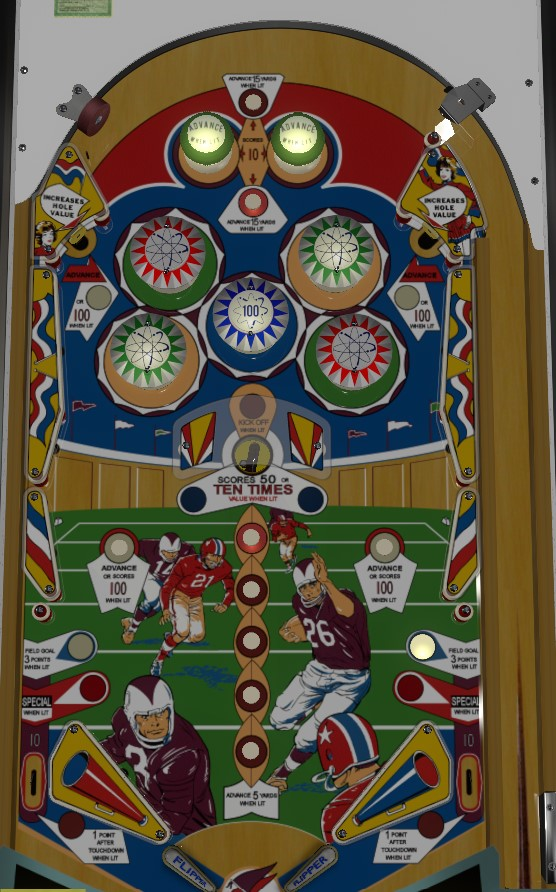

Touchdown is the replay version. Kickoff is the add-a-ball version, which seems to have no major differences other than having Specials score an extra ball instead of a free game.
Not to be confused with Touchdown (Gottlieb, SS, 1984) or Kick Off! (Bally, EM, 1977).
Standup targets and rollover buttons advance the football up the field on the backglass. Advancing it all the way causes the white rollover buttons and top standup targets to light for 100 pinball points, as well as lighting all of the bumpers. Draining the ball or making the center saucer after fully advancing the football performs a "kickoff" which restarts the advance sequence and allows for more football points to be earned. Hitting both top standup targets lights the center saucer for 500 pinball points, but there's no indication on the playfield of which target(s) you need.
At the start of each game and after each ball drains, a "kickoff" occurs that determines the starting place of the football on the backglass. The exact starting place is random based on the status of the game's score motor; the kickoff can put the ball as low as the lower 20 yard line, requiring 16 advances to score a touchdown, or the kickoff can spot the entire football field for you and spot a touchdown. The top rollover buttons, which are lit alternately, always advance the ball 15 yards (3 advances). The top standup targets and white rollover buttons move the ball 15 yards (3 advances) in a 3-ball game, but only 5 yards (1 advance) in a 5-ball game. The vertical line of 5 bottom rollover buttons move the ball 5 yards (1 advance) when lit.
If the football is at the 50 yard line or higher, one of the two out lanes will be lit for 3 football points, alternating based on the exact position of the football. Advancing the football to the top of the field scores a touchdown, worth 6 football points. When a touchdown has been scored, all pop bumpers are lit, and the top standup targets and white rollover buttons are lit for 100 pinball points instead of a football advance. Additionally, when a touchdown has been scored, both out lanes are lit for 1 football point. Shooting the center saucer when a touchdown has been scored prompts another Kickoff, which unlights the out lanes, top standup targets, and white rollover buttons, but allows you to earn more football advances towards another 6-football-point touchdown. If at least 16 (in a 3-ball game) or 26 (in a 5-ball game) football points are scored, the out lanes will be lit for Special.
Green and red pop bumpers score 1 point or 10 when lit, and are lit intermittently based on the exact position of the football on the field. The center blue pop bumper always scores 100 points. Top standup targets and white rollover buttons score 100 points when a touchdown has been scored; otherwise, no pinball points are scored for standup targets or rollover buttons. The center saucer scores 50 pinball points; hitting both top standup targets lights the saucer blue to score 500 points instead.
There are no in lanes. Two inch mini flippers are used. Out lanes can be lit for 3 things: a 3 football point field goal if the football is at or above the 50 yard line, a 1 football point conversion kick if a touchdown has been scored, or a Special when 16 or 26 football points have been scored (depending on 3- or 5-ball settings).